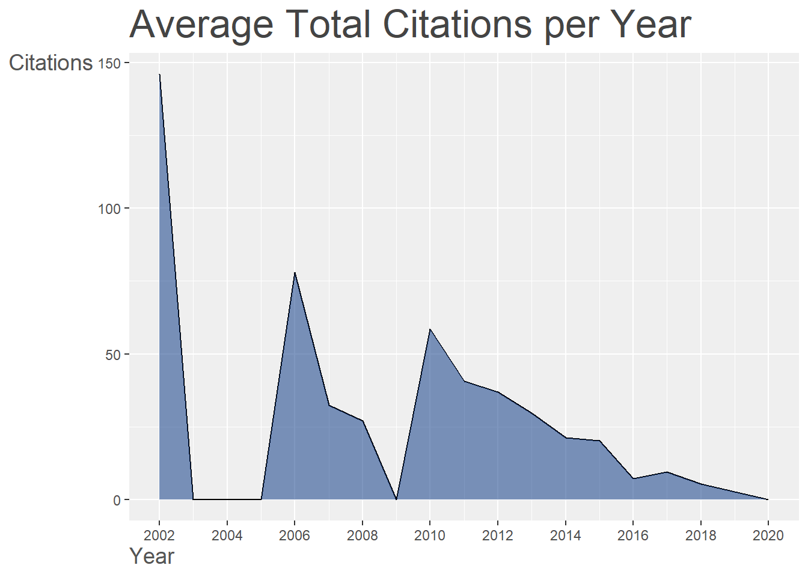
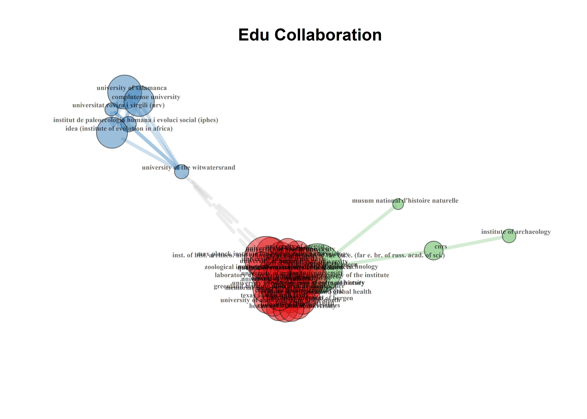

3.1.1 Primary findings related to the collection
results <- biblioAnalysis(df, sep = ";")
options(width = 100)
s <- summary(object = results, k = 10, pause = FALSE)##
##
## Main Information about data
##
## Documents 97
## Sources (Journals, Books, etc.) 36
## Keywords Plus (ID) 673
## Author's Keywords (DE) 340
## Period 2002 - 2020
## Average citations per documents 18.13
##
## Authors 401
## Author Appearances 528
## Authors of single-authored documents 11
## Authors of multi-authored documents 390
## Single-authored documents 12
##
## Documents per Author 0.242
## Authors per Document 4.13
## Co-Authors per Documents 5.44
## Collaboration Index 4.59
##
## Document types
## ARTICLE 92
## BOOK CHAPTER 1
## EDITORIAL 1
## REVIEW 3
##
##
## Annual Scientific Production
##
## Year Articles
## 2002 1
## 2006 1
## 2007 3
## 2008 1
## 2010 4
## 2011 7
## 2012 3
## 2013 5
## 2014 9
## 2015 7
## 2016 7
## 2017 12
## 2018 14
## 2019 22
## 2020 1
##
## Annual Percentage Growth Rate 0
##
##
## Most Productive Authors
##
## Authors Articles Authors Articles Fractionalized
## 1 CUCCHI T 9 CUCCHI T 2.32
## 2 GONZLEZ-AGUILERA D 8 THULMAN DK 2.00
## 3 YRAVEDRA J 8 BUCHANAN B 1.67
## 4 ARAMENDI J 7 CARDILLO M 1.58
## 5 COURTENAY LA 7 GUNZ P 1.48
## 6 EVIN A 6 COURTENAY LA 1.24
## 7 MAT-GONZLEZ M 6 O'BRIEN MJ 1.17
## 8 BUCHANAN B 5 GONZLEZ-AGUILERA D 1.12
## 9 CORNETTE R 5 YRAVEDRA J 1.12
## 10 DOBNEY K 5 COLLARD M 1.08
##
##
## Top manuscripts per citations
##
## Paper TC TCperYear
## 1 VIOARSDTTIR US, 2002, J ANAT 146 7.68
## 2 KOVAROVIC K, 2011, J ARCHAEOL SCI 101 10.10
## 3 LYCETT SJ, 2006, J ARCHAEOL SCI 78 5.20
## 4 ARCHER W, 2010, J ARCHAEOL SCI 74 6.73
## 5 BUCHANAN B, 2010, J ARCHAEOL SCI 71 6.45
## 6 THULMAN DK, 2012, J ARCHAEOL SCI 68 7.56
## 7 BERMDEZ DE CASTRO JM, 2011, J HUM EVOL 56 5.60
## 8 KRAUSE-KYORA B, 2013, NAT COMMUN 55 6.88
## 9 HARVATI K, 2010, J HUM EVOL 54 4.91
## 10 OKUMURA M, 2014, J ARCHAEOL SCI 50 7.14
##
##
## Corresponding Author's Countries
##
## Country Articles Freq SCP MCP MCP_Ratio
## 1 UNITED KINGDOM 15 0.2239 5 10 0.667
## 2 FRANCE 14 0.2090 4 10 0.714
## 3 GERMANY 8 0.1194 3 5 0.625
## 4 SPAIN 8 0.1194 4 4 0.500
## 5 ARGENTINA 7 0.1045 4 3 0.429
## 6 USA 5 0.0746 4 1 0.200
## 7 AUSTRIA 2 0.0299 1 1 0.500
## 8 CANADA 2 0.0299 1 1 0.500
## 9 CHILE 2 0.0299 0 2 1.000
## 10 BRAZIL 1 0.0149 1 0 0.000
##
##
## SCP: Single Country Publications
##
## MCP: Multiple Country Publications
##
##
## Total Citations per Country
##
## Country Total Citations Average Article Citations
## 1 UNITED KINGDOM 484 32.3
## 2 GERMANY 216 27.0
## 3 FRANCE 198 14.1
## 4 SPAIN 146 18.2
## 5 ARGENTINA 132 18.9
## 6 CANADA 118 59.0
## 7 USA 87 17.4
## 8 SOUTH AFRICA 74 74.0
## 9 BRAZIL 50 50.0
## 10 AUSTRIA 45 22.5
##
##
## Most Relevant Sources
##
## Sources Articles
## 1 JOURNAL OF ARCHAEOLOGICAL SCIENCE 27
## 2 JOURNAL OF HUMAN EVOLUTION 10
## 3 AMERICAN JOURNAL OF PHYSICAL ANTHROPOLOGY 5
## 4 QUATERNARY INTERNATIONAL 5
## 5 PLOS ONE 4
## 6 QUATERNARY SCIENCE REVIEWS 4
## 7 ARCHAEOLOGICAL AND ANTHROPOLOGICAL SCIENCES 3
## 8 JOURNAL OF ARCHAEOLOGICAL SCIENCE: REPORTS 3
## 9 AMERICAN ANTIQUITY 2
## 10 AMERICAN JOURNAL OF HUMAN BIOLOGY 2
##
##
## Most Relevant Keywords
##
## Author Keywords (DE) Articles Keywords-Plus (ID) Articles
## 1 GEOMETRIC MORPHOMETRICS 43 ARCHAEOLOGY 67
## 2 TAPHONOMY 7 MORPHOMETRY 52
## 3 ZOOARCHAEOLOGY 7 GEOMETRY 24
## 4 ARCHAEOLOGY 6 MALE 24
## 5 EXPERIMENTAL ARCHAEOLOGY 6 ARCHEOLOGY 23
## 6 3D GEOMETRIC MORPHOMETRICS 5 FEMALE 22
## 7 ARCHAEOBOTANY 4 HUMANS 22
## 8 CUT MARKS 4 HUMAN 21
## 9 PALEOINDIAN 4 SKULL 19
## 10 PROJECTILE POINTS 4 HISTORY 18
## Warning: Use of `xx$Country` is discouraged. Use `Country` instead.## Warning: Use of `xx$Freq` is discouraged. Use `Freq` instead.## Warning: Use of `xx$Collaboration` is discouraged. Use `Collaboration` instead.
## Warning: Use of `Y$Year` is discouraged. Use `Year` instead.## Warning: Use of `Y$Freq` is discouraged. Use `Freq` instead.## Warning: Use of `Y$Year` is discouraged. Use `Year` instead.## Warning: Use of `Y$Freq` is discouraged. Use `Freq` instead.
## Warning: Use of `Table2$Year` is discouraged. Use `Year` instead.## Warning: Use of `Table2$MeanTCperYear` is discouraged. Use `MeanTCperYear` instead.## Warning: Use of `Table2$Year` is discouraged. Use `Year` instead.## Warning: Use of `Table2$MeanTCperYear` is discouraged. Use `MeanTCperYear` instead.## Warning: Removed 1 rows containing missing values (position_stack).## Warning: Removed 1 row(s) containing missing values (geom_path).
## Warning: Use of `Table2$Year` is discouraged. Use `Year` instead.## Warning: Use of `Table2$MeanTCperArt` is discouraged. Use `MeanTCperArt` instead.## Warning: Use of `Table2$Year` is discouraged. Use `Year` instead.## Warning: Use of `Table2$MeanTCperArt` is discouraged. Use `MeanTCperArt` instead.
## Articles analysed 89## Author LocalCitations
## 41 BUCHANAN B 25
## 180 LYCETT SJ 22
## 308 VON CRAMON-TAUBADEL N 22
## 56 COLLARD M 21
## 7 ARCHER W 17
## 289 THULMAN DK 14
## 37 BRAUN DR 13
## 104 FOLEY RA 13
## 219 O'BRIEN MJ 10
## 115 GONZLEZ-AGUILERA D 9## Paper DOI Year LCS GCS
## 8 BUCHANAN B, 2010, J ARCHAEOL SCI 10.1016/J.JAS.2009.09.047 2010 15 71
## 19 THULMAN DK, 2012, J ARCHAEOL SCI 10.1016/J.JAS.2012.01.004 2012 14 68
## 2 LYCETT SJ, 2006, J ARCHAEOL SCI 10.1016/J.JAS.2005.10.014 2006 13 78
## 9 ARCHER W, 2010, J ARCHAEOL SCI 10.1016/J.JAS.2009.09.033 2010 13 74
## 24 LYCETT SJ, 2013, J ARCHAEOL SCI 10.1016/J.JAS.2012.11.005 2013 9 40
## 7 CARDILLO M, 2010, LECT NOTES EARTH SCI 10.1007/978-3-540-95853-6_15 2010 8 35
## 15 BUCHANAN B, 2011, J ARCHAEOL SCI 10.1016/J.JAS.2010.11.007 2011 6 47
## 1 VIOARSDTTIR US, 2002, J ANAT 10.1046/J.1469-7580.2002.00092.X 2002 4 146
## 26 OKUMURA M, 2014, J ARCHAEOL SCI 10.1016/J.JAS.2014.02.009 2014 4 50
## 35 ARCHER W, 2015, PLOS ONE 10.1371/JOURNAL.PONE.0132428 2015 4 23## Warning: Use of `df2$TCpY` is discouraged. Use `TCpY` instead.## Warning: Use of `df2$freq` is discouraged. Use `freq` instead.## Warning: Use of `df2$Author` is discouraged. Use `Author` instead.## Warning: Use of `df2$year` is discouraged. Use `year` instead.## Warning: Use of `df2$Author` is discouraged. Use `Author` instead.## Warning: Use of `df2$year` is discouraged. Use `year` instead.## Warning: Use of `df2$freq` is discouraged. Use `freq` instead.## Warning: Use of `df2$Author` is discouraged. Use `Author` instead.## Warning: Use of `df2$year` is discouraged. Use `year` instead.## Warning: Use of `df2$Author` is discouraged. Use `Author` instead.
## Warning: Use of `df2$Author` is discouraged. Use `Author` instead.## Warning: Use of `df2$year` is discouraged. Use `year` instead.## Warning: Use of `df2$freq` is discouraged. Use `freq` instead.


3.7 Social structure - collaboration
3.7.1 Author collaboration
Scientific collaborations are plotted where nodes are the authors and links are co-authorships.
3.7.2 Edu collaboration

3.7.3 Country collaboration